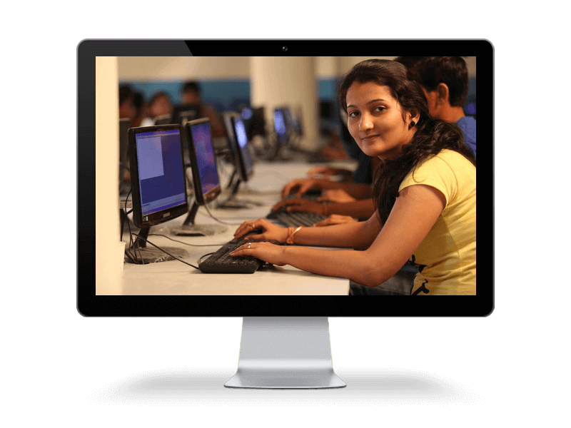

IICS stands for Indian Institute of Computer Sciences. It is the best IT training institute
in Delhi, which provides a variety of programs and courses at an affordable cost. We are the Best DOEACC Institute in Delhi, known for the excellence, quality and consistency. We have well qualified and experienced faculties in various streams, who doesn’t only provide computer courses, but also helps in personality development of the students.
IICS is the Best NIELIT institute in Delhi, which provides quality training in software development, hardware and networking, multimedia and animation, web designing, E-Accounting, digital literacy and short term courses. IICS provides diploma, advance diploma and master diploma in various career oriented courses. All programs have different fee structures and time duration. The academics of all courses are up-to-date and specially designed for a better career of the students.
IICS has a state-of-the-art infrastructure with sufficient space and relevant environment. In our institute, we have separate systems for every student, so that he/she can learn better. We are the leader in providing the animation courses in Delhi. So, if you are looking for a leading Max training institute in Delhi and Maya training institute in Delhi, then grab your seats at IICS. We are well established in the four locations of Delhi and the trainers in all branches are technically skilled, as they work on a daily basis to maintain their expertise and knowledge. One can approach us directly by reaching our institutes and get the admission in placement based courses. After completing course from IICS, you will definitely get good career opportunities in life. |

|